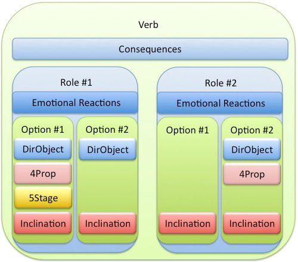
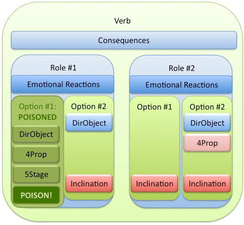
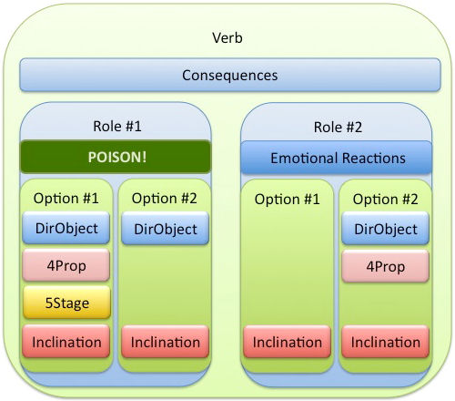
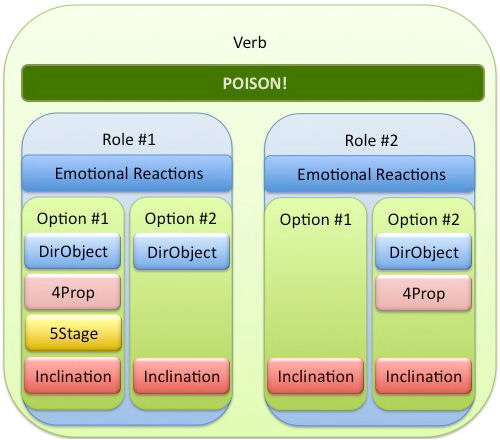

Poison is a special layer of protection that the Story Engine provides you. OK, that probably doesn't sound comforting, but once you understand the concept, you'll appreciate our terminology.
We have already made it impossible for you to write a Script that is nonsense. You can't multiply Fred by the chair, nor can you ask whether your first stage is true or false. We simply don't permit you to write anything that is obviously nonsensical.
But what about Scripts that make sense most of the time, but, under the wrong circumstances, MIGHT make no sense? For example, consider this simple Script:
CouchPotato_Athletic of:
PickBestActor
NOT
Female of:
CandidateActor
CouchPotato_Athletic of:
CandidateActor
This will figure out how much of a couch potato or athlete each of the males in the cast is, and picks the most athletic of them. Sounds reasonable, doesn't it? But let's suppose that some crazy person playing your storyworld has somehow managed to kill off every last male in the cast. There aren't any men left! Which means that PickBestActor won't find anybody to pick. This is a nonsensical situation! What is our poor Engine to do?
The Engine solves this problem by Poisoning the Option in which the Script appears. In other words, the Engine says, "I can't make hide nor hair out of this Script, so I'm giving up on it, which means that I can't complete the calculations for this Option, so I'm just going to ignore the entire Option." It continues running the storyworld, but skips over the bad part. The storyworld won't crash and die if you create a script like this; it will do the best it can with what it's got. And in fact, there will be times when you decide it's OK for a particular instance of Poison to happen under certain rare circumstances.
Still, Poison is a dead-end, which means it cuts off options for your player. It can also interfere with important housekeeping tasks that you might be counting on. So it's worthwhile to minimize the opportunities for Poison to occur. Here's how you can diagnose and fix common types of Poison.
How To Know if a Script Is Poisoned
Rehearsal Lizard and Log Lizard both report Poison. Search Lizard can be useful in finding all places where you use a particular Operator that might result in Poison. See Lizards for more information on how to use these features of SWAT.
What Happens If a Script Is Poisoned
The results of a script Poison depend on where it occurs. Let's delve a little more deeply. Here is how a sample Verb would look, when all its elements are working properly:

All pieces of the Verb are in working order and thus they give meaningful results. We have some physical Consequences (perhaps a Prop changes hands, perhaps weather conditions change on a Stage; perhaps an Actor has died). We have two Roles (one could be the DirObject of ThisVerb; the other might be a Witness). Both Roles, #1 and #2, contain Emotional Reactions, and the ReactingActors for those Roles have Options (i.e., opportunities to take action). Each Option provides the ReactingActors with WordSockets telling them with whom (and/or with what and/or where) they should react. The Inclinations tell how likely they are to take the Options.
Poison in a WordSocket or Inclination
If a script gets Poisoned at the WordSocket or Inclination level, the Poison carries up to the Option level.

At the level of the Option is the lowest possible place this kind of Poison can be contained, because every WordSocket and Inclination is necessary for the Option to make sense. The Story Engine handles a Poisoned Option by making it invisible to the Actors (including the player). In the example shown above, in Role #1, the ReactingActor will have access to only one Option, Option #2.
Poison in an Emotional Reaction
Poisoned Emotional Reaction scripts do not Poison the rest of the Role.

However, they can affect the outcome of your storyworld. For instance, a Poisoned Emotional Reaction script could lead the other Actors to treat your Protagonist exactly the same way after he murders an innocent bystander as they did beforehand.
Poisoned Consequences
As with Emotional Reactions, Consequences with Poison are self-contained, and do not prevent the Verb's Roles from being triggered.

But just as with the other types of Poison, they can cause some odd results. For instance, a Poisoned Consequence could lead to one Actor giving another a Prop, but the Prop not actually changing hands.
Common Poisonings and How to Prevent Them
You may not be able to prevent every possible instance of Poison in your storyworld—and sometimes you may not even want to! But armed with some foreknowledge, you can prevent the most egregious cases. Here are the most frequent causes of Poison and how to fix them.
HistoryBook Operators
There are a lot of HistoryBook operators, any of which can trigger Poison: EventHappened, CausalEventHappened, CountEvents, CountCausalEvents, ElapsedTimeSince, IHaventDoneThisBefore, and IHaventDoneThisSince. Especially early on during storyplay, the Event you are trying to look up may not have happened yet.
The only way to avoid a HistoryBook look-up Poisoning is to be certain that the Event you are attempting to identify has definitely occurred before the Verb in which you are using the HistoryBook Operator. To identify and correct this kind of Poison, use Log Lizard or Rehearsal Lizard.
PickBest____ Operators
PickBest____ is another notorious Poisoner. If the Story Engine can't find a match for the conditions you've specified in a PickBest___ clause, it will kill your script dead. As with Lookup, the only prevention for this is to ensure that there will always be at least one thing (Actor, Prop, Trait, or whatever) that fits your PickBest criteria.
Undefined Script Elements
Here is a very common Poison, and one that is easy to fix. Undefined terms in your script result in Poison. The fix is to use Search Lizard (see Lizards), which will generate a clickable list of undefined terms for you. (An undefined term will always start with a question mark, and will appear at the beginning of the Search list.) Click, fix, and go!
Change of Word Socket Data Type
When you change a WordSocket from one type to another (e.g., 4Actor to 4Prop), SWAT does something nifty: instead of throwing away all your scripting work, it keeps your old script. However, this means you almost certainly have some wrong data-type Operators in that WordSocket script. For instance, if you had a 5Actor WordSocket, and you changed it to a 5Prop WordSocket, the script probably still contains references to CandidateActor. Since the Engine is no longer considering CandidateActors for the WordSocket, CandidateActor no longer makes sense, and if the Engine runs across this, it will Poison the WordSocket (and thus, the Option).
The way to avoid this kind of Poison is to be sure you immediately update the related script, when you change a WordSocket data type.
Past____ (and This____ and Chosen____)
Another potential Poison source are the Operators Past____, This____, and Chosen____ (e.g., PastSubject, This3Actor, ChosenProp, PastStageTrait). This____ and Chosen____ Poisonings are rare, as SWAT has some protections built in, but just as with other HistoryBook type Operators, Past____ can easily result in Poison. The best way to track these down is to use Rehearsal Lizard or Log Lizard.
Page Number Less Than Zero
In rare instances, you might try to pin down a specific Event by calculating when it happens (that is, its page number). If the number you calculate is less than zero, you will get a Poison. Rehearsal Lizard and Log Lizard allow you to find this type of Poison.
Divide By Zero
First, a terminology check, for those who like me do multiplication and division all the time, but haven't referred to the terms for the different since high school. If you set up a script where you are dividing two terms—say a ÷ b = c—the dividend is the first number, a; the divisor is the second number, b; and the quotient is the answer, c. If your divisor (b)is 0, not surprisingly, your script will blow sky high, as dividing by zero is an arithmetic no-no. Again, the best way to find these is to run Rehearsal Lizard or Log Lizard. You can also (a) test your quotients using Scriptalyzer, and (b) double check them using Search Lizard, to head possible Poisons off at the pass.
Box Reference With An Undefined Box
If you refer to a Box in a script, but you haven't defined it yet, you will get Poison. Though this isn't foolproof, as a quick check for undefined Boxes, in Search Lizard you can compare the number of Fill___Boxes (e.g., FillVerbActorBox: the place where it's defined) versus the number of ___Boxes (e.g., VerbActorBox: the place where it is used).
Poisoning Exercises
For this tutorial, use your test storyworld with some of the above Operators in your scripts. Create conditions you know don't exist in your storyworld to generate Poison. Then try using Log, Rehearsal, and Search Lizards to find and fix them.
Previous tutorial: Who's Fate? (part 2) Next tutorial: WordSockets